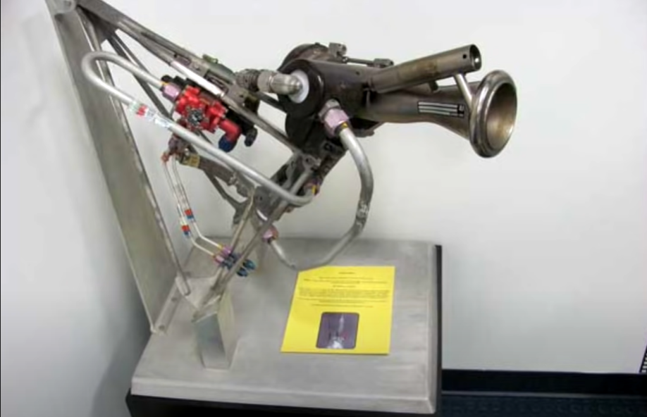
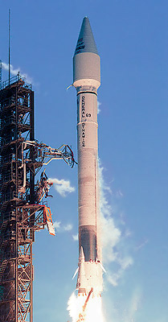

The atlas program was an american missile and launch vehicle program.The first atlas vehicle was
the SM-65 which was the us's first intercontinental ballistic missile.Today the atlas 5 is the only
operational atlas launch vehicle.It is one of the most reliable launch vehicles.
| Name | Status | Engines | Stages | Payload capacity | Number of launches |
|---|---|---|---|---|---|
| Atlas-Agena | Retired | unknown | 2 boosters , 1 first stage , 1 seconds stage | 1000kg(LEO) , 700kg(GEO) , 390kg(TLI) , 261kg(earth escape) | 109 |
| Atlas-Centaur | Retired | unknown | unknown | unknown | 197 |
| Atlas 1 | Retired | unknown | unknown | unknown | 11 |
| Atlas 2 | Retired | solid , 3 RS-56 , 2 RL-10 , 2 R-4D | 4 SRB(IIAS) , 1 booster , 1 second stage , 1 third stage(optional) | 6580kg(LEO) , 2810kg(GTO) | 63 |
| Atlas 3 | Retired | 1 RD-180 , 1/2 RL-10A | 1 first stage , 1 second stage | 8640-10218kg(LEO) , 4055-4500kg(GTO) | 6 |
| Atlas 5 | Operational | solid , RD-180 , 1 RL10A / 1 RL10C / 2 RL10A | 0-5 SRB , 1 first stage , 1 second stage | 8210-18850kg(LEO 28.70°) , 4750-8900kg(GTO) | 91 |
Atlas A was the first full scale prototype of the atlas missile.It did not have the stage and a ahalf design and used 2 fixed booster
engines.
Atlas B was the first atlas missile to use the stage and a half design.It also had a sustainer engine.Atlas B used explosive bolts to
jettison the booster section.It had 9 sub-orbital flights as an ICBM.In its eighth flight it launched the world's first communication
satellite(SCORE) into orbit which was used by former US president Eisenhower to broadcast a christmas message.
Atlas C was similar to Atlas B, but had a larger LOX tank and smaller RP-1 tank due to technical changes to the Rocketdyne engines.
Booster burn time was much longer than the A/B series, up to 151 seconds.
Atlas-Able was a three and a half stage rocket.It used the other atlas rockets as first stage and had vangaurd upper stages(Able second
stage , Altair third stage).The first Atlas-Able used an Atlas C as the first stage, but this exploded during a static fire test on 24 September.
1959.All 3 launches of this rocket had failed.
The Atlas-Agena was a two-and-a-half-stage rocket, with a stage-and-a-half Atlas missile as the first stage, and an RM-81 Agena second
stage.It was used to launch the mariner probes to mars,venus and probes to moon.The agena second stage was powered by hypergolic fuel.Four
variants were developed-A,B,C,D.Agena A did not have restart capability(it could not stop its engine and then restart it later) and was
mostly flown on Thor-Agena rocket.Agena B was restartable and had long propellant tanks.After several failure NASA asked for an improved
version to launch their probes.In the end modified atlas D and atlas E/F flew with agena D.
Atlas Centaur was a launch vehicle derived from the Atlas D.It was basically an Atlas D but with a Centaur upper stage.Centaur A,B,C,D
were used.Centaur A,B,C were developmental versions and failed few times and Centaur D was the first centaur version to enter operational
service.

The first stage of this rocket was built using parts taken from Atlas E and F rockets.The first stage flew with several different
upper stages - Agena , Altair , Burner , MSD , OIS , OV1 , PTS , SGS , Star , Trident.The MSD upper stages were used to
launch naval reconnaisance satellite.The SGS upper stage onsisted of 2 solid rocket motors.The trident was used for suborbital
test of reentry vehicles.
Atlas G consisted of an improved Atlas core with modernized avionics and stretched propellant tanks. The Centaur stage also
had several updated components and other technical improvements.The maiden flight failed due to a minor fatigue crack developed
in the Centaur LOX tank during staging and orbital injection.
The atlas 1 was the last atlas rocket with vernier engines.It was similar to atlas G/H.
 Atlas II provided higher performance than the earlier Atlas I by using engines with greater thrust and longer
fuel tanks for both stages.LR-89 and LR-105 were replaced by the RS-56.Atlas II was the last Atlas to use a
"stage-and-a-half" design.The two booster engines, RS-56-OBAs, were integrated into a single unit called the
MA-5A and shared a common gas generator.The Vernier engines on the first stage of the Atlas I were replaced
by a hydrazine fueled roll control system.This series used an improved Centaur II upper stage, the world's
first cryogenic propellant stage.There were 3 version-Atlas 2(normal),Atlas 2A,Atlas 2AS.The atlas 2A had the
RL-10A4 engine on the centaur instead of the RL10A-3-3A engine.The Atlas 2AS had 4 Castor 4A solid rocket
boosters.These boosters were ignited in pairs, with one pair igniting on the ground, and the second igniting
in the air shortly after the first pair separated.
The atlas 3(also called Atlas 2AR during development) was the first atlas rcket with no "stage-and-a-half" design.It used a brand
new first stage with an RD-180 soviet/russian engine.The first stage had a bigger LOX tank than previous one.There were 2 versions-
3A and 3B.
Atlas 5 has a rigid tank consisting of isogrid aluminium instead of the previous steel balloon tank design.Atlas V rockets have a
three number configuration code.The first number represents the fairing diameter size in meters. The second number denotes the
number of solid rocket motors (SRMs), which attach to the base of the rocket. The number of SRMs for a 4 meter fairing can range
from 0 – 3. However, the 5-meter fairing Atlas V can support up to 5 SRMs, due to the different aerodynamic properties of the
fairing.The third number denotes the number of engines on the Centaur Upper Stage.The atlas 5 is known for its high precision
orbital manuevers.

Most modern conventional rockets use staging.Here there are 2 or more rocket stages present.Each stage has its own propellant
tanks and engines.Once one of the stage runs out,it is ditched and second stage fires and so on...This way fuel is not wasted
carrying empty tanks.However during early atlas development rocket scientists didnt know if they could light the engine midflight.
So they lighted all the engines at once during launch.All 3 engines were connected to the same fuel tank.Then after 172 seconds into
launch the booster engines were jettisoned.The sustainer engine powered the rest of the rocket all the way to orbit.
This was the first launch of an atlas vehicle.It happened on 11th june,1957.Engine start proceeded normally and the launcher
release system also functioned properly. All went well until T+26 seconds when the B-2 engine lost thrust, followed two seconds
later by the B-1 engine.The rocket then tumbled over and started burning.The Atlas reached a peak altitude of 9800 feet (2900
meters) and at T+50 seconds the range safety officer sent the self destruct command.The failuer happened because some of the
exhaust gases went through a tube and burnt some wiring.The Atlas 6A(next test) was also a failure.
The third flight(Atlas 12A) was the first successful flight of an atlas vehicle.
The pioneer P-3 , P-30 , P-31 were all lunar orbiter missions.They were launched by the Atlas Able rocket.All 3 of these ended as failures.The rocket either
failed in flight or exploded on the pad.
The MA-6 carried the an american astronaut to orbit for the first time.The Atlas-Mercury rocket carried the mercury capsule named Friendship 7 with John
Glenn in it.
The first atlas centaur flight had a lot of delays due to technical problems such as hydrogen leakage,guidance system malfunction etc.It launched on 8 May
1982 but under a minute into the launch the Centaur stage ruptured and disintegrated.The failure was determined to be caused by an insulation panel that
ripped off the Centaur during ascent, resulting in a surge in tank pressure when the liquid hygrogen overheated.The second flight was successful and
became the first use of a hydrogen rocket engine in space.In 1966 an Atlas Centaur rocket boosted the surveyor 1 too the moon becoming NASA's first
extraterrestrial landing.It was also used to launch agena target vehicles for the gemini program.
Atlas-agena was used to launch the mariner and ranger programs which visited moon,mercury,mars and venus and military programs like MIDAS(Missile
Defense Alarm System).
Big Joe 1 launch an uncrewed boilerplate mercury capsule into a suborbitl trajectory to test its heat shield.The launch had some problems with the engines
not operating correctly and capsule not separating.However the capsule did separate after exhausting its RCS fuel.
The starliner is a crewed capsule developed by boeing under a NASA contract.Boeing buys Atlas launches from ULA to launch them.OFT2 was the second
uncrewed starliner test afer the first one failed to dock with the iss.Aside from some minor thruster failures during orbital manuevering,the mission was
a success.
Atlas 5 also launches US space force/US Department of Defense satellites.